말을 듣고 기억한 뒤
움직여야 하는 수업
긴 설명, 여러 규칙, 빠른 전환이 동시에 주어지면 움직임을 시작하기 전에 정보 처리 부담이 커질 수 있습니다.
- 여러 문장을 듣고 기억
- 두 가지 이상의 규칙을 동시에 처리
- 정해진 시간 안에 빠르게 반응
SPOMOVE는 긴 구두 설명 대신 화면에 제시되는 단순하고 예측 가능한 색 신호를 움직임으로 연결하는 특수아동 시지각 놀이체육 프로그램입니다. 충분한 반응 시간을 제공하고 익숙한 규칙을 반복해, 아동이 스스로 보고·선택하고·움직일 수 있도록 설계합니다.
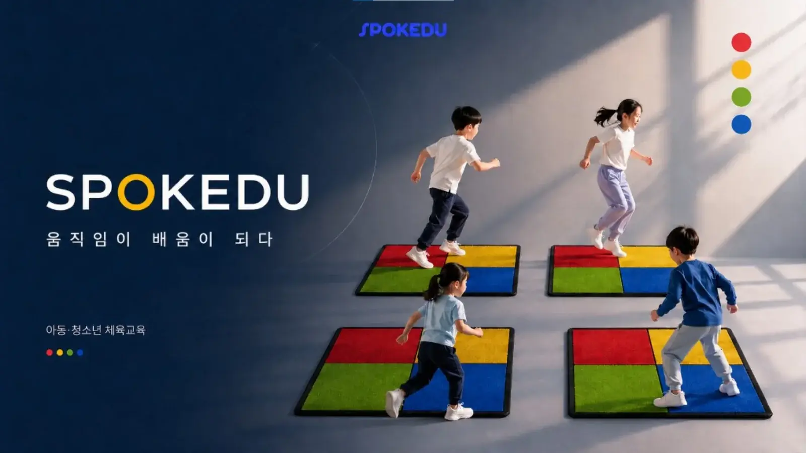
특수아동에게 여러 문장과 규칙을 한꺼번에 설명하면 행동이 멈추거나 시작이 늦어질 수 있습니다. SPOMOVE는 정보를 줄이고 화면의 색과 위치를 단순하게 제시해, 아동이 자신의 속도로 움직임을 시작하도록 돕습니다.
긴 설명, 여러 규칙, 빠른 전환이 동시에 주어지면 움직임을 시작하기 전에 정보 처리 부담이 커질 수 있습니다.
한 번에 하나의 시각 신호를 제시하고 충분히 기다리며, 반복을 통해 화면과 움직임의 관계를 익히도록 합니다.
먼저 색을 확인하고, 해당 패드로 이동하는 가장 단순한 구조부터 시작합니다.
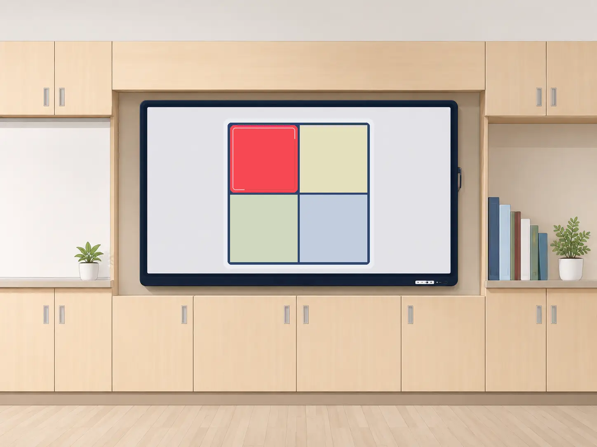
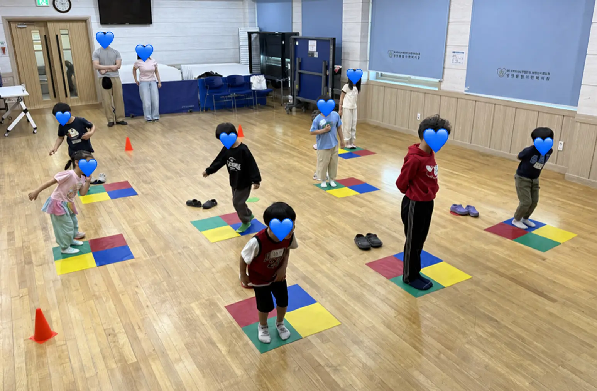
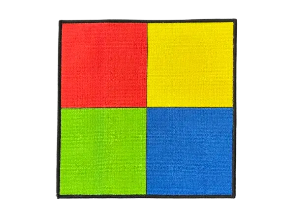
SPOMOVE는 처음부터 많은 자극과 재미 요소를 넣지 않습니다. 아동이 화면을 이해하고 움직임을 시작할 수 있도록 규칙을 단순화하고, 충분히 반복한 뒤 한가지씩 변화시킵니다.
처음에는 한 가지 색과 한 가지 움직임만 제시해 화면과 패드의 관계를 이해하도록 합니다.
색 하나 · 위치 하나 · 동작 하나자극 간격과 제한 시간을 느리게 설정해 보고, 선택하고, 이동할 시간을 충분히 제공합니다.
느린 속도 · 넉넉한 반응 시간규칙을 자주 바꾸지 않고 익숙한 활동을 반복해 스스로 시작하는 경험을 축적합니다.
예측 가능한 구조 · 반복학습안정적으로 참여하기 시작하면 색의 수, 위치, 속도, 방해 자극을 한 가지씩 추가합니다.
작은 변화 · 점진적 확장특수아동은 규칙과 시지각 반응이 동시에 크게 바뀌면 행동이 멈출 수 있습니다. SPOMOVE는 ‘색에 맞는 위치로 이동한다’는 핵심 규칙을 유지하고, 과일·동물·자연물·탈것 등 시각적 소재만 변화시켜 익숙함과 흥미를 함께 유지합니다.
화면에서 제시된 색을 보고 같은 색의 패드로 이동합니다. 주제가 달라져도 아동이 수행해야 하는 핵심 규칙은 유지됩니다.
사과·바나나·포도처럼 익숙한 소재를 색 신호와 연결합니다.
동물 캐릭터의 색을 확인하고 같은 색 패드로 움직입니다.
꽃·나무·하늘 등 자연의 색을 활용해 화면 변화를 제공합니다.
자동차·버스·기차 등 관심 소재를 같은 색 규칙으로 연결합니다.
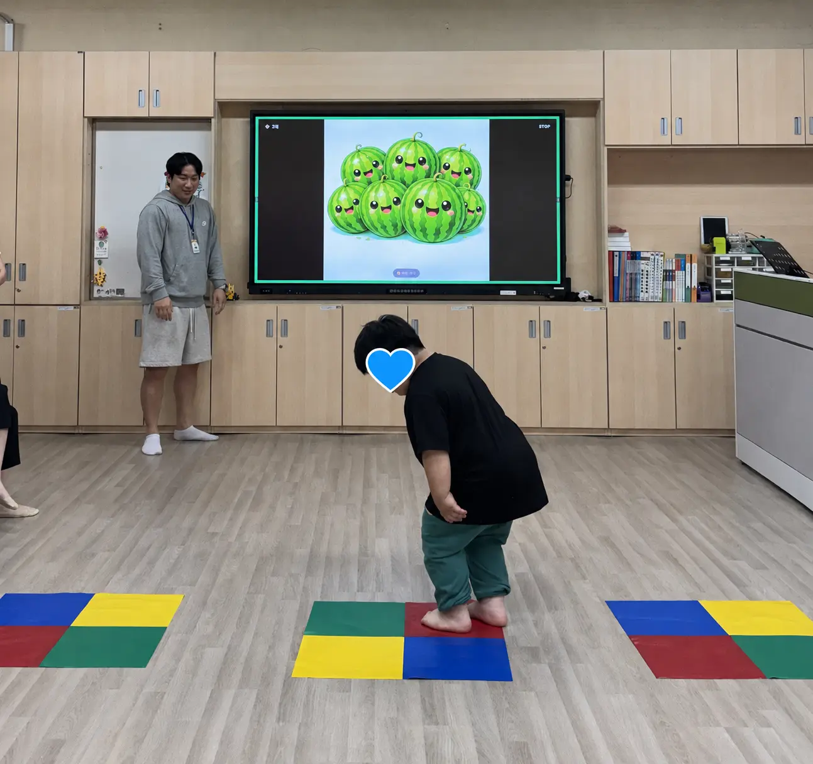
과일과 같은 친숙한 소재로 화면의 분위기를 바꾸되, 색을 확인하고 같은 색 패드로 이동하는 핵심 규칙은 유지합니다. 익숙한 활동 구조 안에서 시각적 흥미만 더하는 방식입니다.
SPOMOVE는 색만 보고 점프하는 활동을 반복하는 것으로 끝나지 않습니다. 단순 반응을 충분히 익힌 뒤, 참여자의 안정적인 수행 수준에 맞춰 선택·주의·억제·규칙 전환 요소를 한 단계씩 추가합니다.
화면의 한 가지 색을 보고 같은 색 패드로 이동합니다.
색 확인 → 이동여러 색과 위치 중 현재 제시된 타겟을 선택합니다.
보기 → 고르기 → 움직이기제시 위치와 반응 위치가 다를 때 현재 규칙에 맞게 선택합니다.
자동 반응 억제 · 위치 선택주변의 방해 자극을 제외하고 가운데 목표 정보에 반응합니다.
주의 선택 · 방해 자극 구분색·방향·의미가 충돌할 때 현재 규칙에 맞는 반응을 선택합니다.
규칙 전환 · 복합 반응기본 움직임기술을 먼저 경험한 뒤 SPOMOVE를 통해 앞에서 익힌 움직임을 화면의 시각 정보와 연결합니다. 이후 다양한 체험활동과 조작운동기술로 확장하면 아동이 움직임을 더 쉽게 이해하고 즐겁게 이어갈 수 있습니다.
걷기, 뛰기, 점프, 멈추기, 방향 전환 등 움직임의 기초를 먼저 경험합니다.
걷기 · 달리기 · 점프 · 정지 · 방향 전환화면의 색과 위치를 확인하며 앞에서 익힌 움직임을 스스로 선택하고 수행합니다.
시각 정보와 신체 움직임을 연결하는 핵심 단계공, 풍선, 후프, 컵, 콘, 스카프와 스포츠교구를 활용해 활동을 확장합니다.
굴리기 · 던지기 · 옮기기 · 쌓기 · 치기 · 터치교사가 화면과 패드의 관계를 짧고 명확하게 안내한 뒤, 아동이 화면의 색과 위치를 직접 확인하고 움직임을 선택할 수 있도록 기다립니다.
기본 움직임 경험 → 화면 신호 확인 → 스스로 이동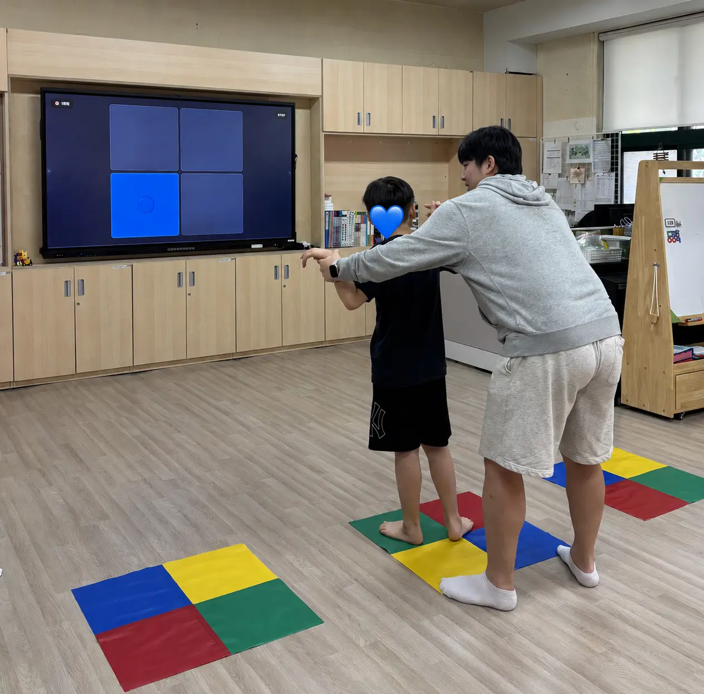
실제 특수체육 수업에서 SPOMOVE 활동에 참여한 아동들은 반복 활동을 통해 화면을 바라보고 움직임을 시작하는 방식에 익숙해졌습니다. 이후 정해진 동작을 수행하는 데 그치지 않고, 자신의 방식으로 움직임을 확장하고 표현하는 등 창의적이고 자발적인 참여 모습을 보여주었습니다.
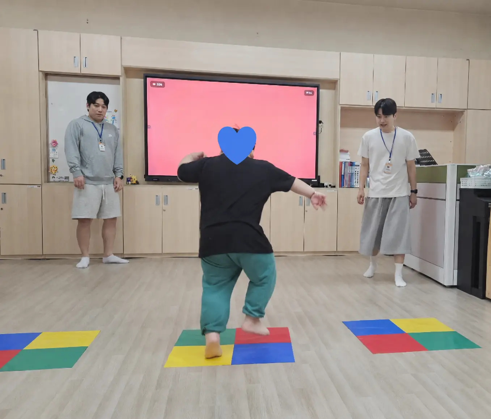
정해진 위치에 도착한 뒤 화면의 리듬에 맞춰 몸을 흔들며 자신의 움직임을 표현했습니다.
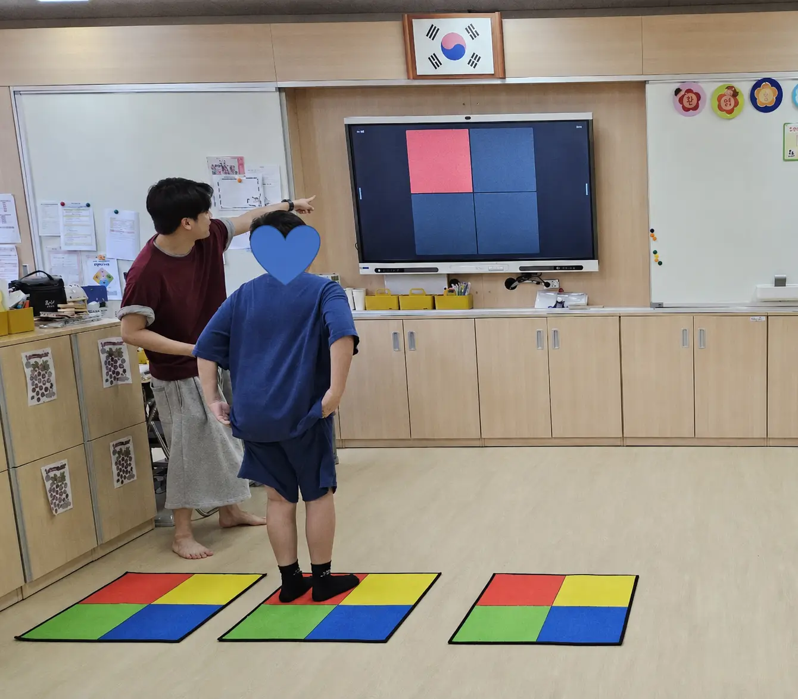
색 패드로 이동한 뒤 동작을 멈추지 않고 반복 점프로 확장하는 모습을 보였습니다.
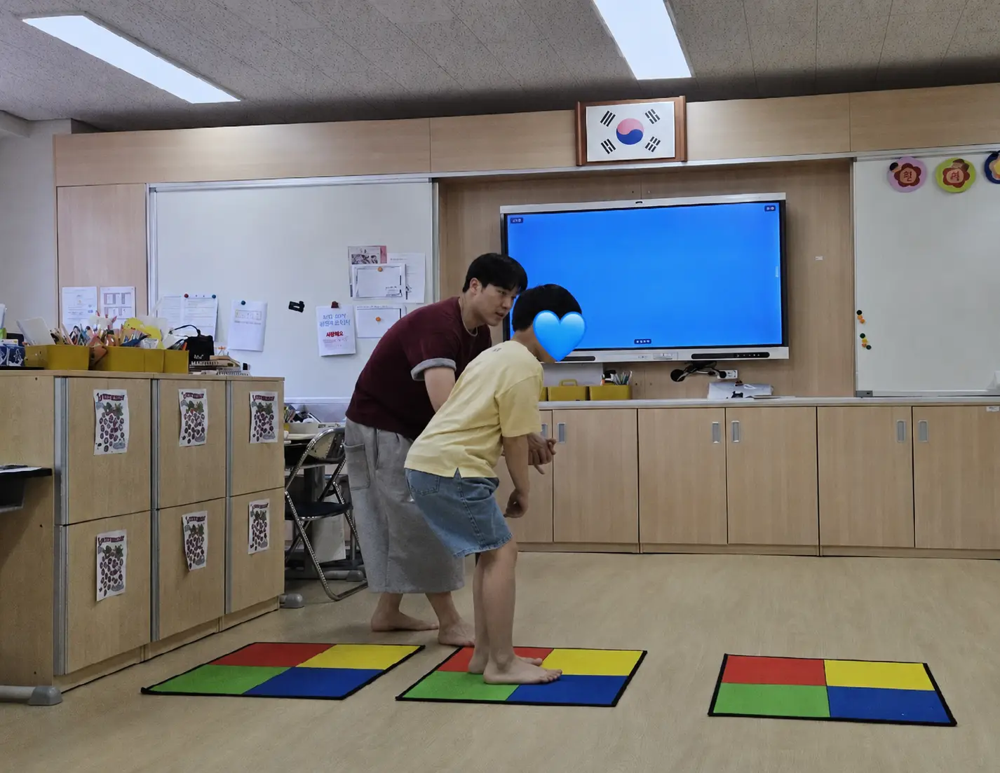
여러 패드를 배치했을 때 같은 색의 위치를 찾아 자신만의 이동 경로를 만들었습니다.
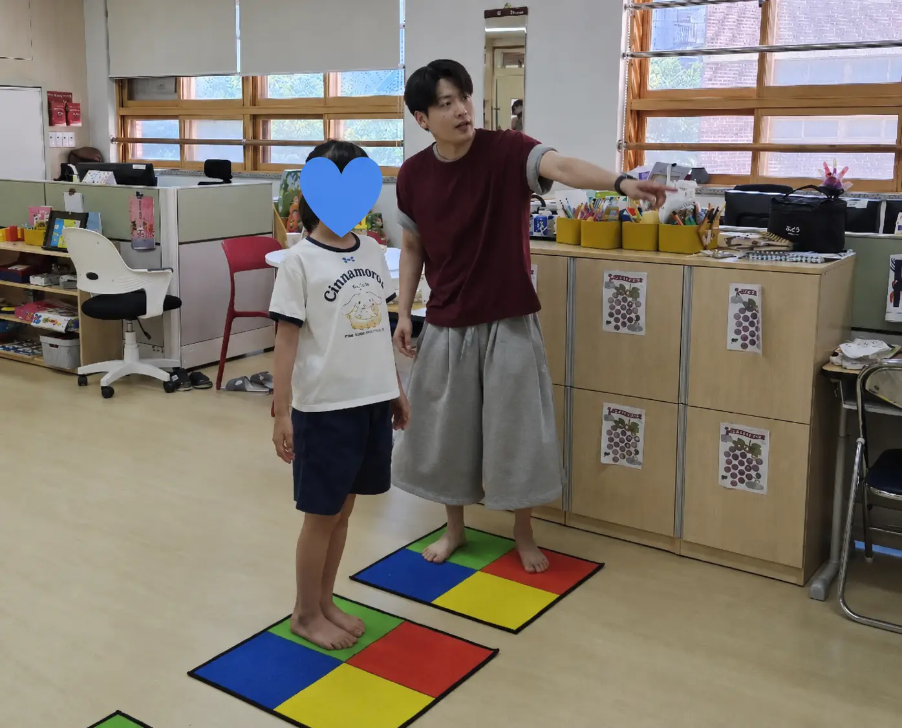
반복을 통해 활동 구조에 익숙해지면서 다음 자극을 기다리고 움직임을 준비했습니다.
자극의 속도만 바꾸는 것이 아니라 화면 구성, 패드 수, 이동 거리, 동작 난이도, 반복 횟수와 교구 사용 여부를 함께 조절합니다. 개별·소그룹 수업과 기관 프로그램의 목적에 맞게 구성할 수 있습니다.
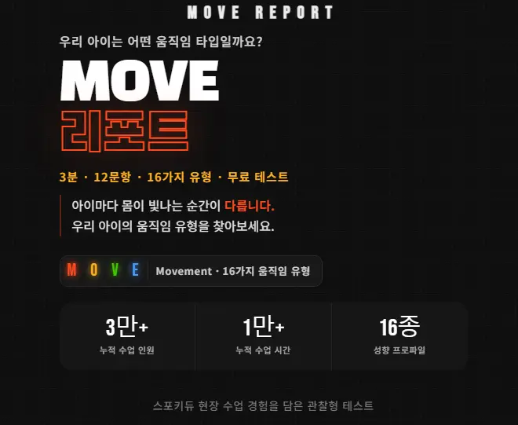
스포키듀는 다양한 특수체육 현장에서 축적한 커리큘럼과 체육교육 이론을 바탕으로 기관별 수업을 커스터마이징합니다. 수업 전 MOVE 리포트와 담당자 협의를 통해 참여 아동의 선호 활동·반응 수준·지원 필요를 확인하고, 장애 특성과 기관 환경에 맞는 SPOMOVE·기본 움직임·교구 활동을 설계합니다.
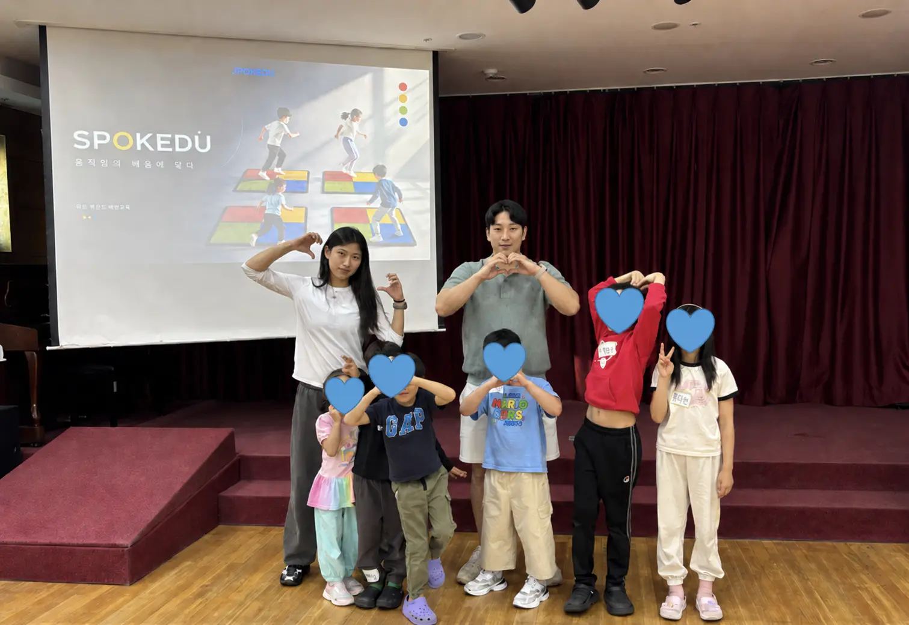
현재 중구청이 주관하는 서울시청 지원사업 「찾아가는 동행 체육교실」을 통해 특수교육 대상 아동의 기본 움직임·SPOMOVE·교구 활동 연계 수업을 운영하고 있습니다. 이와 함께 부천 상록학교, 장애인복지관, 가족장애인지원센터, 농아인복지관 등 다양한 현장에서 특수체육과 놀이체육을 진행해 왔습니다.
스포키듀는 특수 아동의 반응 수준과 기관의 환경을 확인한 뒤 기본 움직임, SPOMOVE, 조작운동기술을 연결한 맞춤형 특수체육 수업을 구성합니다.
SPOKEDU
아동·청소년 체육교육 전문기관
www.spokedu.com